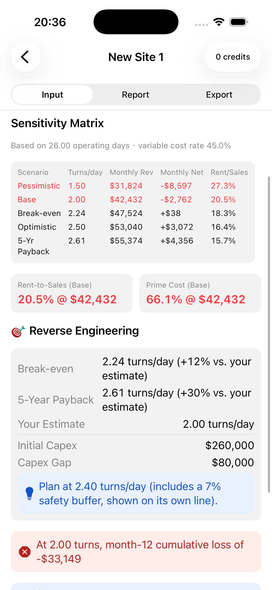
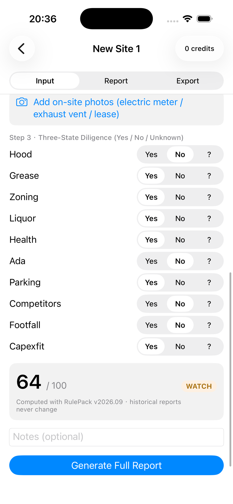
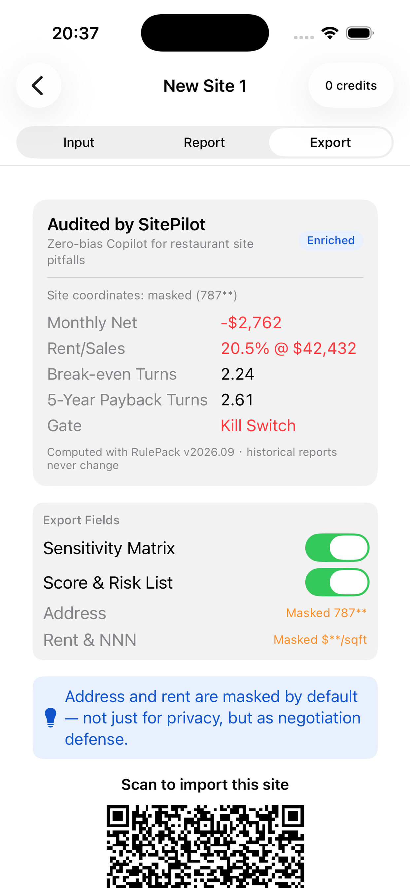

CASE STUDY · IN DEVELOPMENT · iOS
SitePilot
Before signing a restaurant lease, understand what it takes to make it work.
I turned a demand signal from restaurant-consulting livestreams in China into a US-market product hypothesis: help founders examine costs, assumptions, and unanswered questions before committing to a site.
THE PRODUCT IN PRACTICE

01 / MARKET REASONING
A demand signal is the start of a hypothesis.
My starting point was observing restaurant-consulting livestreams in China and considering the demand behind them. I translated that signal into three product questions: can this rent be supported, which costs are missing, and what must be checked before committing? This was exploratory observation, not a quantified audience study.
01 · Observe
Advice becomes more useful when a founder can connect it to their own numbers. I chose a specific decision moment: evaluating a candidate site before signing.
02 · Investigate
Supplementary US desk research points to thin operating margins and location-dependent costs and permissions. These support the problem framing, but do not establish demand for my app.
03 · Differentiate
Placer.ai covers traffic, audiences, and expansion analysis. My proposed entry point is narrower: helping a small operator test the economics of a site already on their shortlist.
04 · Constrain
I selected the US as a commercialization experiment, with English, USD, and sqft for the first release. Austin is the initial modeling example; broader geographic fit remains unproven.
Evidence added during case preparation · 27 Sep 2026
The National Restaurant Association reports median pre-tax income of 2.8% of sales for full-service restaurants and 4.0% for limited-service restaurants in its 2025 operations release. SBA guidance and Austin’s permitting information add the local-cost and diligence context. These are background signals, not universal thresholds or proof of willingness to pay.
Read the sources and limits ↗02 / PRODUCT JUDGMENT
Three choices that changed the product.
Feasibility before persuasion
A polished negotiation script can keep someone pursuing a weak deal. I put a feasibility gate before paid assistance: the model checks the rent reduction required by its assumptions and withholds negotiation generation when that requirement is too large.
Trade-off: the 25% gate is a product rule to calibrate, not a prediction of what every landlord will accept. The report must expose its assumptions.
Show uncertainty where it enters
One score can hide fragile inputs. I paired pessimistic, base, and optimistic scenarios with Yes / No / Unknown diligence. Missing information becomes a question to resolve rather than silently becoming a reassuring answer.
Trade-off: this asks more of the user. Progressive input keeps the first screen short; the fuller evaluation makes the remaining work visible.
Keep the essential verdict free
Core calculations and rejection reports stay free. Optional AI assistance carries the paid value. Single credits and a five-credit pack test the hypothesis that site search happens in bursts; an annual option serves a different, repeat-use hypothesis.
Trade-off: offering a price is not validating it. Conversion, repeat use, and whether users understand the paid benefit still need observation.


A decision users can inspect
In this development example, the base scenario shows a monthly loss of $2,762 and rent-to-sales of 20.5% at $42,432 revenue. Pairing the ratio with its revenue assumption makes the result interpretable. It is a worked example, not a forecast for a real restaurant.
Unedited simulator captures · 13 Sep 2026. They illustrate the workflow, not the latest review build. Open either image for full detail.
03 / TECHNICAL UNDERSTANDING
Make the product promise an architectural constraint.
User-triggered branch → Optional AI explanation & wording · no financial calculation or scoring
Reproducible calculations
Swift calculates financial results on-device. Money uses integer cents; explicit rounding rules let displayed numbers feed later calculations. Keeping the core offline also removes model availability from the essential evaluation path.
Stable historical reports
A saved report freezes derived values alongside its rule version. Rendering the snapshot preserves what the user originally evaluated, rather than quietly changing an old conclusion after a rule update.
A bounded role for AI
AI receives a derived business summary only when requested and adds qualitative assistance. It does not supply financial results or scores. This boundary makes it clearer which outputs can be recomputed and which need judgment.
04 / COMMERCIAL LEARNING
A successful purchase should feel successful.
App review exposed a mismatch: a purchase could succeed and grant access, yet a secondary ledger-sync failure still surfaced as an error. To the customer, the distinction between payment and bookkeeping was invisible.
I separated the responsibilities. StoreKit verification anchors local entitlement delivery; the Worker records the transaction. The repair made ledger failures silent and added a persistent retry queue, while transaction updates reused the local fulfillment path.
The lesson: failure handling is part of the paid product experience. It must reflect whether the user received value.
RESPONSIBILITY SPLIT
Verified purchase
↓ Local entitlement
↓ Background ledger sync
On failure → queue & retry
Real refund-notification testing remains open.
05 / PROGRESS & NEXT QUESTIONS
Built and submitted. Market fit is the next question.
Delivered
The iOS app is submitted for App Store review. Development records dated 25 Sep report 143 passing Swift tests and 38 passing Worker checks. These describe engineering validation, not market impact.
Still unproven
US customer demand, willingness to pay, and improved real-world decisions remain hypotheses. Worker type checking and a real purchase-to-refund notification exercise remain gaps in the handoff evidence.
Next validation
Observe whether founders explain key assumptions correctly, identify a useful next diligence question, and understand the paid enhancement. Use those observations to revise onboarding, rules, and pricing before claiming fit.
Research sources & evidence boundaries
Desk research supplemented on 27 Sep 2026; it was added while preparing this case. The original demand signal comes from my livestream observations. No quantified livestream growth, US interviews, revenue, or customer savings are claimed.
- National Restaurant Association · 2025 operational realities ↗
- SBA · Choosing a business location ↗
- Austin Public Health · Fixed food establishments ↗
- Placer.ai · Restaurant location analytics ↗
- National Restaurant Association · Occupancy data is not a standard ↗
Internal evidence: product specification, implementation decisions, the IAP repair review, and the 25 Sep release handoff. Screenshots are earlier development captures. The app’s thresholds require local calibration; neither the research nor this case establishes financial or legal suitability for a particular restaurant.